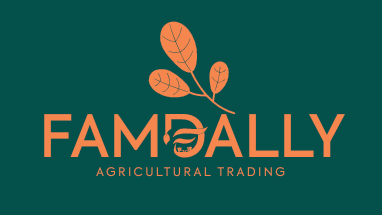

COMPANY PROFILE
FAMDALLY AGRICULTURAL TRADING
Registered in Tanzania • Incorporated 2022 • Headquarters: Dar es Salaam
Who We Are
Famdally Limited is a Tanzanian-based coffee trading company established in 2022 and headquartered in Dar es Salaam. The company operates within Tanzania’s Agricultural export sector with a focus on sourcing, coordinating and supplying green coffee to international markets.
The company was formed in response to growing global demand for traceable, origin-focused African coffee and the need for trading partners who understand both the commercial and regulatory aspects of Agricultural exports regulations, quality standards and documentation requirements.
Famdally Limited’s operations are guided by a disciplined trading approach that prioritizes compliance and long-term commercial relationships. The company positions itself as an intermediary between coffee origin and international markets, ensuring that supply is handled responsibly and that contractual commitments are executed realistically.
Our Mission
“To consistently deliver premium Agricultural products with reliability, punctuality and trust, transforming Agriculture into sustainable global trade.”
Our Vision
“To establish coffee in global markets where origin, expertise and consistency shape everyday choice and long-term recognition.”
Company Background & Context
Tanzania is one of Africa’s established coffee-producing countries, with a long-standing reputation for producing both Arabica and Robusta coffee across multiple growing regions. The country’s coffee sector is characterized by diverse Agro-climatic zones, varied altitude ranges and distinctive regional profiles that appeal to international buyers.
Operating within this environment requires an understanding of not only production dynamics, but also regulatory frameworks, export procedures and the relationship-based nature of coffee trading. Famdally Limited was established with an appreciation of these factors and with the understanding that credibility and consistency are essential in Agricultural commodity trade.
Since its incorporation in 2022, the company has focused on building strong operational foundations rather than pursuing rapid expansion. This approach allows Famdally Limited to develop reliable supplier relationships, establish compliant trading processes and engage in transactions that are aligned with its operational capacity.
The company recognizes that coffee trading is sensitive to market fluctuations, quality variations and logistical challenges. As such, its operating philosophy emphasizes structured execution, clear communication and careful management of risk across the trade cycle.
Core Business Activities
Famdally Limited’s core business activities are centered around the sourcing and international trading of green coffee. The company activities include, but are not limited to:
- Sourcing green coffee beans from recognized producing regions
- Coordinating supply from origin through licensed exporters
- Providing buyers with origin information, specifications and compliance
- Managing trade documentation and export processes
- Facilitating international sales under contractual agreements
The company trades both Arabica and Robusta green coffee, with volumes, grades and specifications determined by buyer requirements and prevailing market conditions. All trading activities are conducted in alignment with Tanzania’s regulatory framework and in coordination with licensed suppliers and exporters.
Famdally Limited does not position itself as a speculative trader. Instead, it operates on a contract-based model that emphasizes clarity of terms, mutual understanding and delivery commitments.
Product Portfolio
Famdally Limited trades a diversified portfolio of Agricultural products, including but not limited to:
- Coffee (Arabica & Robusta)
- Avocado (Hass Export Grade)
- Cashew nuts (Raw Cashew Nuts & Processed Kernels)
- Sunflower Oil (Pure Cold-Pressed & Refined)
All products are supplied in accordance with buyer specifications, contractual terms and export standards.
Sourcing & Supply Chain Approach
Famdally Limited operates a structured sourcing and supply chain model designed to support consistency, traceability and reliability. Key elements include:
- 01 — Long-term relationship with licensed suppliers
- 02 — Engagement with export-ready partners
- 03 — Traceable origin sourcing practices
- 04 — Clear procurement and delivery coordination
The company maintains close communication with suppliers and throughout the trade cycle to ensure consistent quality, on-time delivery and adherence to contract terms.
Quality, Compliance & Trade Standard
Famdally Limited emphasizes quality and compliance with awareness of:
- 01 — Export licensing and documentation requirements
- 02 — Quality control procedures at origin
- 03 — Regulatory oversight by relevant authorities
- 04 — International buyer standards and expectations
Accuracy in documentation, realistic scheduling and transparent communications are essential to the company’s trading operations, ensuring credibility with buyers, suppliers and regulators.
Management & Governance
Famdally Limited is led by a Managing Director with direct involvement in strategic planning, supplier engagement and trade coordination.
Management is supported by experienced partners and supplier networks within the coffee sector, enabling responsive decision making while maintaining disciplined operational execution.
Market Focus & International Engagement
Famdally Limited serves international buyers seeking dependable access to Tanzania coffee. The company maintains flexibility in serving different global markets based on demand, specifications and contractual structure.
Market engagement is professional, contract-based and emphasizes clarity of terms, mutual trust and long-term commercial cooperation.
Company Commitment & Conclusion
Famdally Limited is committed to:
- Responsible sourcing within official trade and regulatory systems.
- Long-term supplier and buyer relationships.
- Transparent and realistic trade execution.
- Respect for origin, quality and contractual obligations.
Through disciplined operations, compliance-driven practices and focus on reliability, Famdally positions itself as a credible and dependable trading partner in the global coffee trade.
Our Contacts
Phone / WhatsApp: +255 754 972 961
Email: info@famdallytrading.com
Website: www.famdallytrading.com
Physical Address: Sea Cliff village, Toure drive Msasani Peninsula, P.O BOX 5182 DAR ES SALAAM, TANZANIA.